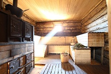
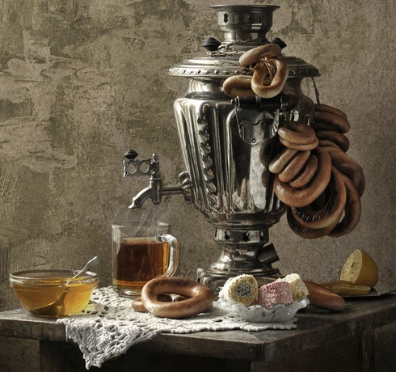
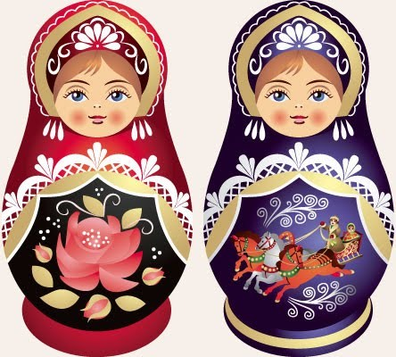

Russian traditions and superstitions
Russia is indeed a unique country, which, along with highly developed modern culture carefully preserves the national traditions. The Russians still celebrate pagan holidays, many people believe in numerous omens and legends.Russian traditions, superstitions and beliefs include superstitions and customs of Russians. Many of them are now inseparable parts of everyday life, or simply common social etiquette, though they often have their origins in superstition. The awareness of them, and their perceived importance, depends on various factors including region and age. Some are extremely common and practiced by the vast majority of the population, while some are extremely obscure.
Russian Hospitality.There is a big difference between the Russian tradition of hospitality and a friendly attitude towards guests in other countries of the world. The legends about the breadth of the Russian soul have a very good reason to exist. Russians love to accept guests and make great hosts. When in Russia, you don't need to wait for a special occasion like a birthday or a holiday to visit a friend or a neighbor. Russians like visiting each other, meeting in friendly companies for dinner, or just stopping by to catch up on what's going on. The latter is called "to drop in for a cup of coffee".
Gifts for the Hosts
Just like it would be rude to leave a guest without a treat, it is considered rude to make a visit without a gift for the hosts. Russians even have an expression "придти с пустыми руками" that literally means "to come with empty hands". It is used to describe guests who didn't bring any gifts to the hosts. You don't have to buy expensive souvenirs when being a guest. A box of chocolates or a bottle of fine wine will make a good gift. If you are visiting a family with children make sure to bring a treat for the kids—a candy, a chocolate bar or fruits.

Russian Banya
(a Russian type of sauna, a kind of steam bath) is one of the oldest Russian traditions. Despite the fact that this tradition is several centuries old, the banya is popular even today. You can find banyas in large cities and small towns. Usually those Russians who have summer cottages, almost always build their own banya there.
How a Russian banya is set up. A Russian banya has a special room, where a large amount of hot steam is created with the help of water and hot air. A classic Russian banya is heated with firewood, but modern versions might use electric heat as well. Inside the banya, which is usually built of wood, there are wide wooden benches along the walls. They are built up one above the other like steps. You can sit or lay on the benches. The higher up the bench the hotter the air is. Once someone has warmed up well enough, he or she leaves the steam room (it is called the парна́я in Russian) and dips into a pool of cold water. You can also pour water over yourself from a tub , while in Siberia it's common to walk right out of the steam room and jump into the snow. hat do you need a venik in the banya for ? At Russian banya there are special bath brooms that are used. These brooms or veniks are bundles of twigs and leafy branches bound together from some kind of tree—usually they are from birch or oak trees. The veniks are dipped into cold water and then smacked briskly all over the body. There is a special person who is responsible for this, called banschik . But usually people don't need banschik's help because groups of friends typically go together and are able to smack each other with veniks.
Banya is a place for communication
Friends go to the banya with a special purpose in mind. It’s considered that the banya atmosphere brings people closer together, allows them to communicate and interact on a more common level. Russians don't spend all their time in the parnaya (парна́я is a room with hot wet steam). During a break they walk out to another room which is called predbannik (предба́нник is a room before the steam room). Usually, that room has a large long table and a few benches. In the predbannik, people take a break from the hot temperature and relax, drink aroma tea or special herbal tea, have conversations about life and share their ideas or beliefs to each other.
Russian Samovars.
Samovars and tea-drinking are an indispensable element of Russian culture. In modern Russia, samovars are rarely used to boil water for tea as originally intended, however many families place samovars in the center of the table during holiday celebrations. Reserving pride of place for a samovar at the festive table is both a tribute that Russians give to their ancestors and a ceremony that embodies warm-hearted hospitality.What is a Samovar?
A samovar is a device traditionally used to heat and boil water for tea. The word samovar in Russian is derived from "сам" meaning self and "варить" meaning to boil. The name can be loosely translated into English as "self-boiler". Samovars are made from metal and consist of a large urn-shaped container and a metal pipe running vertically through the middle. To boil the water inside a samovar, the pipe is filled with solid fuel such as pine cones, charcoals and wood chips which are set on fire. A small tea pot is used to brew a tea concentrate. The tea pot is often placed on top of a samovar to keep it heated with the passing hot air.
The tea is served by pouring tea concentrate into a cup and diluting it with boiled water. The water is released through a faucet at the base of the metal container. Samovars were one of the earliest home appliances in Russia. Families and guests would sit at a large dinner table to have a leisurely talk and discuss the latest events while drinking hot tea
What is a Samovar singing about?
Russian people believed that the samovar has a soul. This belief was mainly based on the fact that samovars were producing different sounds when being heated with fuel. The shape of the samovar's body accounts for amazing acoustics and water makes peculiar noises when it is being brought to the boil. It was common to say that "a samovar is singing" (самовар поёт).
Who invented a Samovar?
The oldest pottery samovar-like was found in Azerbaijan. Its age was 3700 years, which is about 1700 older than a samovar discovered in Egypt. There were similar devices found in China but they weren't used for making tea.
Tula Russia
Tula, Russia.In Russia, the first copper samovar was made in 1778 by the Lisitsyn brothers in Tula, a city known for its metalworkers and arms-makers. Within the first 70 years, numerous samovar-makers in Tula were producing 120 thousand samovars every year. Samovars were mainly made from nickel and copper and particular attention was paid to details. The handles and the faucet could be made in the form of vines or the claws of a dragon, while the body of the samovar could be engraved by hand.
The samovar manufacturing process consisted of 12 stages with individual masters specializing on each stage of production. Interestingly, the population of the whole village could be specializing on manufacturing of a single element, such as the handles of the samovar. The final assembly and trimming of samovars was performed at factories. By the early twentieth century there were about 170 different models of samovars. Samovars were sold by weight—the heavier the samovar the higher the price.
Samovar proverbs
Today, Tula is known as the historical center of samovar production. There is a Russian proverb В Ту́лу со свои́м самова́ром не е́здят, which means "You don't take a samovar to Tula". It is used in the same sense as "to bring coals to Newcastle".

Matryoshka – The Russian Nesting Doll
It's hard to find a symbol of Russia more popular than the traditional Russian nesting doll. These decorated wooden dolls "with a secret" are also called matryoshka dolls or babushka dolls. They are recognized even in the countries thousand miles away from Russia. Taking a Russian nesting doll back home is a must among tourists from Europe and the United States alike. The lovers of exotics collect matryoshkas in Australia and South Africa. The simplicity and originality of matryoshka dolls attract the fans of Russian folk art from around the world. Bright and picturesque Russian nesting dolls decorate the fireplaces and bookshelves in the homes of thousands of Russians.
The history of Russian nesting dolls
Some historians of Russian life argue that matryoshka dolls originated from Japanese traditional dolls. However it's known that Russian masters would make hollow detachable Easter eggs from the wood long before the first nesting doll was made. The first Russian nesting doll set appeared in Moscow in 1890's. It was carved by Vasily Zvyozdochkin from a design by a folk crafts painter Sergey Malyutin. The doll set consisted of eight dolls of decreasing sizes placed one inside the other. All eight dolls depicted children -- the outermost was a girl holding a rooster, six inner dolls were girls, the fifth doll was a boy, and the innermost was a baby.
First Russian matryoshka
The original matryoshka set Despite the fact that first matryoshka dolls were intended for children, their price was so high that only adults could afford to buy them on special occasions. Matryoshka dolls were often given as a present to young women from their beloved ones. In 1900, the dolls earned a bronze medal at the World Exhibition in Paris. Soon after, Russian nesting dolls became wildly popular. The toys were being produced in several well-known manufacturing centers, the most famous of them being Sergiev Posad and Semenov. In the early twentieth century, Russian nesting dolls were being exported abroad in large quantities. The popularity of the dolls even gave rise to a few companies in Germany which produced counterfeit nesting dolls and sold them as Russian toys.
How are Russian nesting dolls made?
It takes a lot of skill to make a Russian nesting doll set. Traditionally, matryoshka dolls were made from linden or birch and their production would involve the participation of the whole family. The dolls of the cylindrical form were painted in different ways: it could be a peasant girl dressed in a sarafan and a headscarf, a man or a child. Matryoshka dolls are often painted holding a basket of berries, bread, or a bunch of flowers in their hands.
The production process would begin with the smallest, innermost doll that was lathed from a single piece of wood and wouldn't separate as opposed to the larger figures. The number of nested dolls in a set could vary from two to sixty however a classic set normally included five nested figures. The carved dolls were covered with special glue to fill the cracks and reduce the roughness, after which the dolls were painted to follow a particular theme.
Today, the same process is used in for hand-made nesting dolls some Russian villages. The nesting dolls can be painted to follow the traditional theme or any other style, including fairy tales characters, animals, famous political leaders, historical figures, musicians and popular movie stars.
A fancy set like that might make a good gift. When in Russia, you can purchase Russian nesting dolls at most places where souvenirs are sold. In Moscow, Izmaylovo Market is an excellent souvenir venue where hundreds of vendors offer myriads of gifts for sale. It's a good idea to reserve a hotel in Moscow and dedicate a full day to shopping at the market.
Russian nesting dolls: Record-breakers
In 1913, a factory in the city of Semyonov produced a matryoshka dolls set that consisted of 48 figures and was painted in traditional red and yellow colors.
In the meantime, the biggest Russian dolls set was presented at the exhibition in Japan in 1970. Russian masters from Semenov showcased a matryoshka set that included seventy-two figures. The production of such matryoshkas requires exceptional skills and talent, so their mass production is not possible.